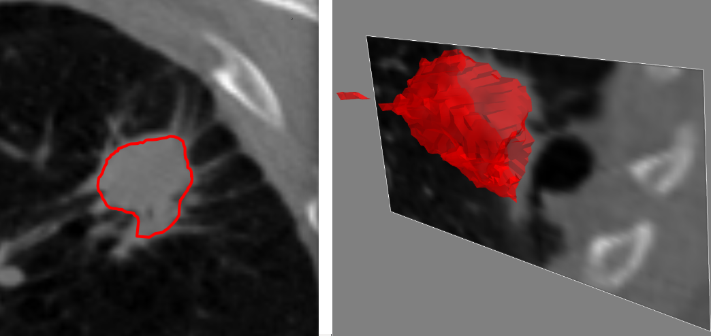
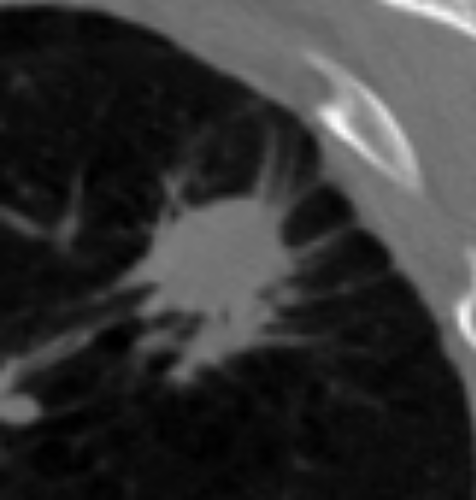
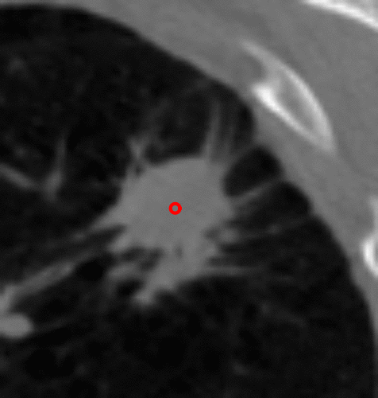
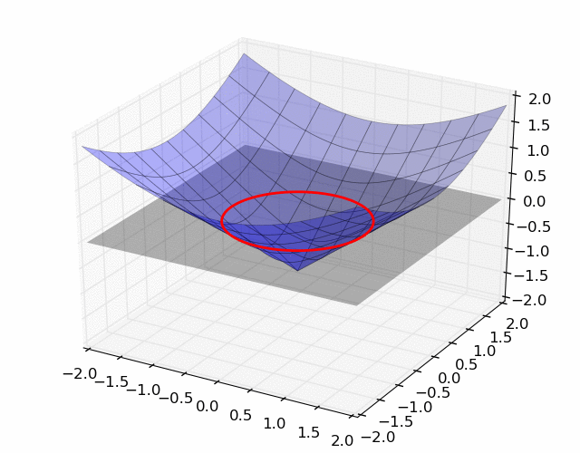

A survey of PDE methods for image segmentation
Matt Hancock — Florida State University — Department of Mathematics
Image segmentation
Not in this talk
- Simple intensity based methods
- Thresholding
- Region growing
- Clustering
- Edge-based
- Watershed
- Statistical methods
- Active shape, active appearance models
- Pixel / voxel - wise Classification
- Markov random fields
- etc ...
Basic idea of PDEs for segmentation
- A curve on the image evolves according to some PDE.
- At equilibrium, the curve represents the boundary of segmentation.
Issues
- Ability to capture "true" segmentation
- Free parameter choices
- Stability
- Smoothness
- Topology
A simple model
- Segment with parametric curve: $\displaystyle \begin{bmatrix} x(s,t) & y(s,t) \end{bmatrix}^T $
- Curve velocity is in the direction of the outward normal, and has magnitude proportional to image pixel values: $$ \begin{bmatrix} x_t \\ y_t \end{bmatrix} = \hat{I}(x,y) \mathbf{n}(s,t) = \frac{\hat{I}(x,y)}{\sqrt{x_s^2 + y_s^2}}\begin{bmatrix} y_s \\ -x_s \end{bmatrix} $$
- $\hat{I}(x,y) = S(G*I)(x,y; \sigma, \beta)$ is the image convolved with a gaussian filter with parameter $\sigma$ and processed with a sigmoidal filter with parameter, $\beta$.
- Approximate PDE with finite differences.
Spiculated lung nodule from LIDC dataset
It works!
Sort of...
Issues
- Sensitive to parameters of gaussian and sigmoidal filter.
- Time step size? Curve parameter discretization?
- How do we know when to stop evolving the curve?
- Curve can't adapt to holes
Active contours (snakes) [1]
- Again, segment via a parametrically defined curve, $\mathbf{c}(s)$.
- Energy minimization principle: $$J[\mathbf{c}] = \int E[\mathbf{c}] ds = \int \left( E_{\text{int}}[\mathbf{c}] + E_{\text{ext}}[\mathbf{c}] \right) ds$$
- Desired curve is $\displaystyle\text{arg}\min_{\mathbf{c}}J[\mathbf{c}]$.
[1]: Kass et. al. Snakes: Active contour models. International journal of computer vision. 1988
Active contours
- Typically,$$E_{\text{int}}[\mathbf{c}] = \frac{1}{2}\left( \alpha ||\mathbf{c}'||^2 + \beta ||\mathbf{c}''||^2 \right) $$
- and, $$E_{\text{ext}}[\mathbf{c}] = -\frac{\gamma}{2} ||\nabla (G*I)(\mathbf{c};\sigma)||^2$$
- $\alpha,\beta,\gamma,\sigma$ are all free parameters
Minimizing the energy functional
- Euler-Lagrange equations yield: $$\nabla E_{\text{ext}} - \alpha \mathbf{c}'' + \beta \mathbf{c}^{(4)} = 0 \tag{1}$$
- Introduce "time" variable, set $(1) := F(t)$.
- Set $\frac{\partial \mathbf{c}}{\partial t} = F(t)$, and discretize in $s$ and $t$ using finite differences.
- At equilibrium, the Euler-Lagrange equations are satisfied.
It works!
Sort of...
Issues
- Needs good initialization.
- So many free parameters! How to set them?
- Can't adapt to holes (without additional bookkeeping).
Level Sets [2]
- Segmenting contour is the zero level set of an evolving surface: $$ \mathbf{c}(t) = \{\mathbf{x} \; | \; \psi(\mathbf{x},t) = 0 \}$$

[2]: Malladi, Sethian, Vemuri. Shape Modelling with Front Propagation: A level set approach. IEEE Transactions on Pattern Analysis and Machine Intelligence. 1995
Motion of the surface
- $\mathbf{x}(t)$ on contour $\Leftrightarrow \psi(\mathbf{x}(t), t) = 0$
- $\mathbf{x}(t)$ moves normal to $\mathbf{c}(t)$ and $||\mathbf{x}_t|| = F(\mathbf{x}(t))$
- So, $$\psi_t + F(\mathbf{x}) ||\nabla \psi|| = 0$$ governs the motion of the surface, and its implicitly defined contour.
Controlling the speed
- Speed is governed by a combination of image attributes and by the geometry of the curve
- Let $F = F_A + F_G$
- Often, $$\begin{align*} F_A &= F_A( ||\nabla (G * I)(\mathbf{x};\sigma)|| ) \\ F_G &= F_G(K) \end{align*}$$

Advantages
- Contours easily split and merge.
- No conceptual differences in extending to 3 dimensions.
Disadvantages
- Same as other methods: stability, parameter setting, etc...
Other PDE methods not discussed
- Caselles, Vicent, Ron Kimmel, and Guillermo Sapiro. "Geodesic active contours." International journal of computer vision 1997
- Vese, Luminita A., and Tony F. Chan. "A multiphase level set framework for image segmentation using the Mumford and Shah model." International journal of computer vision 2002
- Álvarez, Luis, et al. "Morphological snakes." Computer Vision and Pattern Recognition (CVPR), 2010 IEEE Conference on. IEEE, 2010.